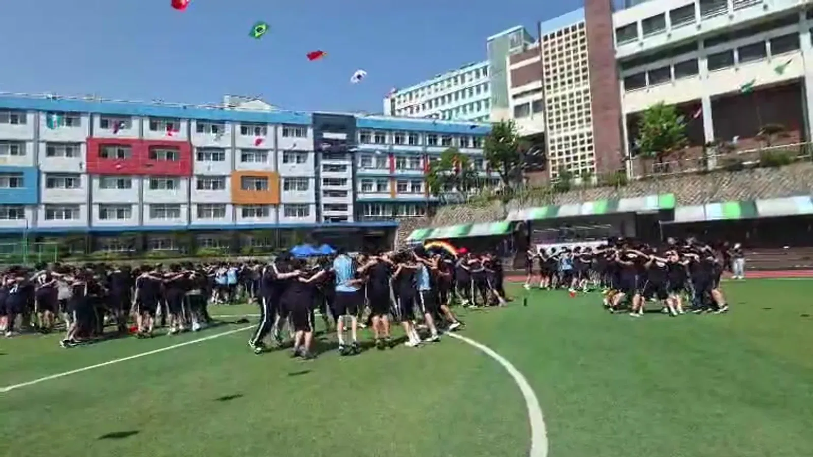
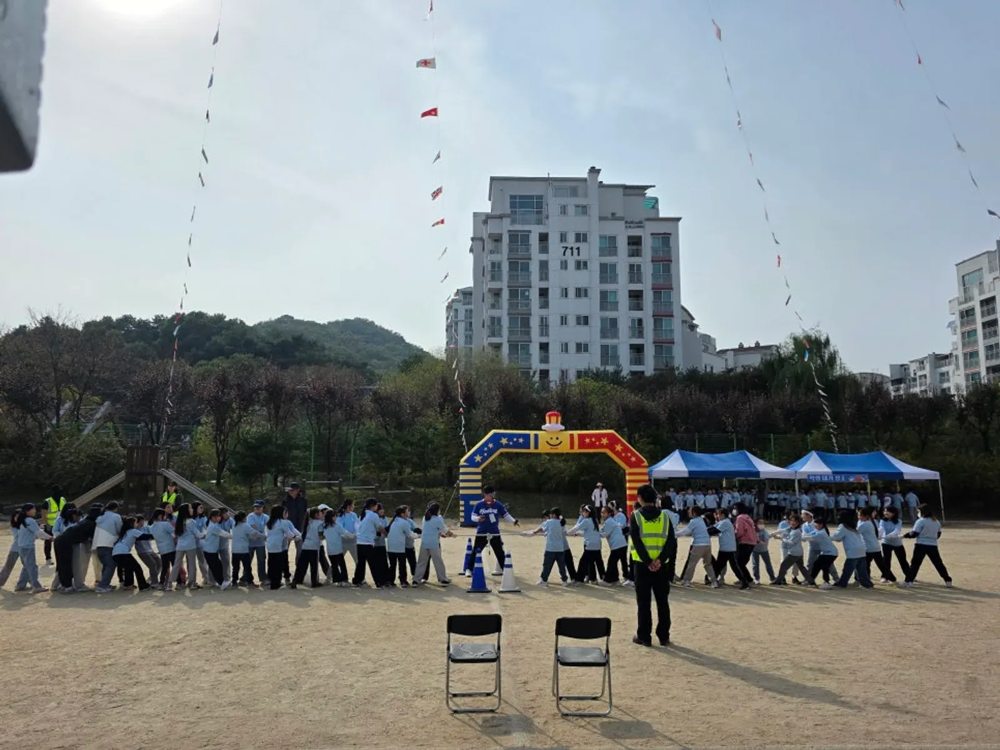

Blog · Event Guide
행사 준비 블로그
행사를 맡은 담당자가 먼저 확인할 것들을 지역별로 정리합니다. 프로그램과 진행, 장소와 음향, 날씨와 안전, 견적까지 현장 기준으로 씁니다.

행사 준비 공통 · 2026년 11월 12일
행사 기록 사진 요청서: 필요한 장면과 전달 범위 정리
행사 기록 사진 요청서를 만드는 담당자를 위해 필요한 장면, 촬영하지 않을 구역, 현장 변경, 원본 보존과 전달 범위를 정리합니다. 사진 촬영 서비스의 포함 여부와 별개로 주최 측이 준비할 실무 항목을 안내합니다.

행사 준비 공통 · 2026년 11월 12일
행사 시간 초과 조정: 줄일 순서와 유지·보류 결정권
행사 시간 초과 조정을 준비하는 담당자를 위해 유지할 순서, 줄일 수 있는 내용, 보류할 항목과 결정권을 정리합니다. 개별 공연의 시작 신호가 아니라 일정이 지연됐을 때 전체 운영에서 합의할 판단을 다룹니다.

행사 준비 공통 · 2026년 11월 12일
행사 무대 시야 점검: 객석의 가림과 글자 읽기 확인
행사 무대 시야 점검을 맡은 담당자를 위해 객석 위치별 가림, 화면과 표지의 가독성, 배치 변경 후 재확인을 정리합니다. 장비 성능이나 기술 기준을 단정하지 않고 현장에서 눈으로 볼 수 있는 범위를 확인합니다.

행사 준비 공통 · 2026년 11월 12일
팀 경기 점수 확인: 기록·이의 접수·결과 확정 순서
팀 경기 점수 확인을 맡은 행사 담당자를 위해 원기록과 집계표 구분, 이의 접수 창구, 재확인 판단, 결과 정정 안내를 정리합니다. 참가 역할이나 종목 구성 대신 점수가 달라졌을 때의 처리 흐름에 집중합니다.

행사 준비 공통 · 2026년 11월 11일
행사 객석 발언 운영: 질문 접수와 마이크 전달 확인표
행사 객석 발언을 준비하는 담당자를 위한 진행 체크리스트입니다. 질문 접수와 발언 순서 확인, 마이크 전달 위치, 발언 마무리 안내를 나누고 즉석 질문이나 참여를 원하지 않는 사람을 어떻게 안내할지 정리합니다.

행사 준비 공통 · 2026년 11월 11일
행사 장비 반입반출 확인: 차량·실물·장소 인수 체크
행사 장비 반입반출을 준비하는 담당자를 위한 확인표입니다. 장소의 반입 조건, 차량 도착과 하역 위치, 반입 물품의 상태 기록, 철수 뒤 실물 반환과 장소 인수를 구분해 협의할 항목을 정리합니다.

행사 준비 공통 · 2026년 11월 11일
행사 접수 명단 수정: 미등재·중복·현장 변경 처리표
행사 접수 명단 수정을 맡은 담당자를 위한 실무 체크리스트입니다. 신청 명단과 실제 도착 기록을 나누고 이름이 없거나 중복된 신청, 동명이인, 현장 요청을 승인 담당에게 연결하는 방법과 접수 종료 뒤 정리를 안내합니다.

행사 준비 공통 · 2026년 11월 11일
행사 종료 안내 준비: 귀가 경로·잔류 공간·마지막 방송
행사 종료 안내를 준비하는 담당자를 위한 실무 체크리스트입니다. 귀가 경로와 남아 있을 수 있는 공간, 수령·문의 창구, 마지막 방송 문구를 확인하고 관람객 퇴장과 장비 철수가 섞이지 않도록 협의할 내용을 정리합니다.

행사 준비 공통 · 2026년 11월 11일
행사 좌석표 변경 관리: 빈자리·동행·현장 수정 확인표
행사 좌석표 변경 관리를 맡은 담당자를 위한 준비표입니다. 좌석 번호와 배치도 기준을 맞추고 불참, 동행 요청, 현장 이동을 기록하는 방법부터 안내 직원과 진행자에게 변경 사항을 전달하는 순서까지 정리합니다.

행사 준비 공통 · 2026년 11월 10일
행사 분실물 접수 준비: 안내소 기록과 반환 확인
행사 분실물 접수를 준비하는 담당자를 위한 안내소 운영 체크리스트입니다. 습득 물건 기록, 공개 안내의 범위, 소유자 확인, 담당자 교대와 종료 뒤 인계까지 주최 측이 정할 항목을 정리합니다.

행사 준비 공통 · 2026년 11월 10일
행사 스태프 업무 분담: 구역 책임과 교대 인계표
행사 스태프 업무 분담을 준비하는 담당자를 위해 구역 책임자, 판단 권한, 교대 때 남길 기록을 정리합니다. 대기줄 배치가 아니라 운영 구역이 비거나 같은 일을 중복 처리하지 않도록 만드는 인계 안내입니다.

행사 준비 공통 · 2026년 11월 10일
행사 공연 큐시트 작성: 출연자 대기부터 퇴장 신호까지
행사 공연 큐시트를 준비하는 학교·기관·회사 담당자를 위한 실무 안내입니다. 출연팀 도착 확인, 소개 멘트와 음원 시작 신호, 무대 전환, 준비가 늦어질 때의 보류 기준을 표로 정리합니다.
행사 준비 공통 · 2026년 11월 10일
행사 발표자료 취합: 화면 파일 승인과 재생 확인표
행사 발표자료 취합을 맡은 담당자를 위한 실무 안내입니다. 발표 순서별 파일 이름, 수정 승인, 글꼴과 영상 재생 확인, 화면에 공개하면 안 되는 자료, 현장 교체와 종료 뒤 파일 정리까지 다룹니다.
행사 준비 공통 · 2026년 11월 10일
행사 경품 재고 관리: 입고·불출·미수령 인계표
행사 경품 재고 관리를 맡은 총무와 운영 담당자를 위한 준비 글입니다. 실물과 목록 맞추기, 무대 불출, 당첨 후 미수령 구분, 행사 종료 뒤 잔여 물품 인계를 한 장의 표로 정리합니다.

행사 준비 공통 · 2026년 11월 9일
송년회 시상식 명단 정리: 동명이인·불참·대리 수상 확인표
송년회 시상식 명단을 만드는 담당자를 위해 원본 버전 관리, 이름 표기와 읽는 법 확정, 불참과 대리 수상 처리, MC 공유본, 인수인계 양식을 정리했습니다.
행사 준비 공통 · 2026년 11월 9일
가족행사 대기줄 설계: 유모차·보행 통로·안내판 점검
가족행사 대기줄이 엉키는 이유와 해결 순서를 정리했습니다. 입구와 출구 분리, 유모차 자리, 보호자 시야, 역할표, 안내판 점검까지 담당자용으로 담았습니다.
행사 준비 공통 · 2026년 11월 9일
야외행사 우천 대안 준비: 장소 전환과 연락 기준 정리
야외행사 우천 대안을 준비하는 담당자를 위해 A안 B안 승인자, 대체 장소 확인, 두 번의 판단 시점, 안내 문구, 계약 확인 항목을 한 장으로 정리했습니다.
행사 준비 공통 · 2026년 11월 9일
행사 음향 문의 사진 준비: 전원·객석·반입 동선 확인표
행사 음향 문의 사진을 어떻게 찍어 보내면 좋은지 정리했습니다. 장소 전체, 객석, 운영 위치, 장비 라벨, 반입 동선까지 7개 항목 확인표와 파일 이름, 미응답 체크리스트를 담았습니다.

행사 준비 공통 · 2026년 11월 9일
워크숍 참여 선택권 설계: 강요 없는 팀빌딩 역할 나누기
워크숍 참여 선택권을 어떻게 설계할지 담당자용으로 정리했습니다. 선수·기록·시간·관찰 역할, 이유를 묻지 않는 빠지기 경로, 안내 멘트와 참여 평가 방법을 담았습니다.

강북 · 2026년 10월 28일
강북 학교 체육대회 대동놀이, 중 · 고등학교 프로그램 짜는 법
강북에서 중 · 고등학교 체육대회를 맡은 선생님께, 학교 체육대회 대동놀이를 넣은 프로그램 흐름과 반 대항 종목 배치, 운동장 운영, 상담 전 준비 항목을 정리했습니다.

남양주 · 2026년 10월 28일
남양주 어린이집 운동회 준비, 유아 종목 · 학부모 동선 · 안전
남양주에서 어린이집 · 유치원 운동회를 준비하는 원장님과 선생님께, 어린이집 운동회 유아 종목 고르기와 학부모 참여 순서, 아이 대기 · 관람 동선, 안전 점검을 정리했습니다.

노원 · 2026년 10월 28일
노원 주민 축제 대행, 동 축제 · 시장 축제 무대와 진행 준비
노원에서 동 축제 · 시장 축제를 준비하는 주민자치회 · 상인회 · 주민센터 담당자께, 주민 축제 대행을 맡기기 전 정할 것과 무대 배치, 순서표, 안전 계획 확인법을 정리했습니다.

노원 · 2026년 10월 28일
노원 초등학교 운동회 업체 고르기, 종목 · 동선 · 음향 준비표
노원에서 초등학교 운동회를 맡은 선생님께, 운동회 업체에 먼저 물어볼 것과 학년별 종목 짜는 법, 대기 · 교대 동선, 운동장 음향과 본부석 준비를 표로 정리했습니다.
도봉 · 2026년 10월 28일
도봉 기업 체육대회 대행 : 종목 구성 · 팀 나누기 · 게임도구
도봉에서 회사 체육대회를 준비하는 총무 · 인사 담당자를 위해 기업 체육대회 대행 전 정할 것, 부서를 섞는 팀 나누기, 협동 중심 종목, 게임도구와 음향 점검표를 정리했습니다.
행사 날짜가 정해지셨나요?
날짜 · 지역 · 인원 · 행사 종류만 알려 주시면 행사에 맞춰 상담 · 견적을 안내드립니다. 행사 중엔 통화가 어려우니 문자 · 카톡을 남겨 주세요.